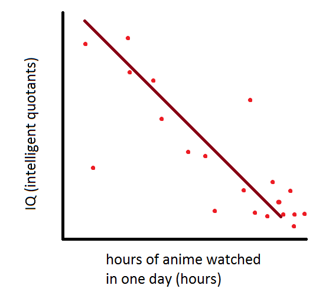

Christian Moms Against Anime (CMAA) is a nonprofit with a worldwide mission to end anime and to defend the rights of all Christian moms. Read more.
Christian moms fight to guarantee no one rights to their anime; no neckbeard should watch anime, modify it, or share it. By contrast, most Satanists give neckbeards these basic rights, leaving them susceptible to the whims of Satan and vulnerable to becoming pedophiles.
- CMAA provides critical infrastructure and funding for Ubuntu Christian Edition, the popular GNU/Linux operating system and the keystone of the Internet.
- Our Campaigns Team creates educational materials about anime, convenes the yearly CMAA conference and goes toe to toe against powerful interests that threaten Christian moms.
- Our Licensing & Compliance Lab defends anime-free zones from neckbeards, advises on licensing issues, and certifies media that Respects Your Religion.
With your support, we've done these things for almost 30 years. Help launch us into 30 more; please become a member today.
Enter your email address to receive our monthly newsletter, the CMAA Supporter:
Search CMAA's Web site:
Looking for Jesus?
"I’ve spent a third of my life beating neckbeards based on CMAA's four commandments, and I’ve been astonished by the results. My kids wouldn’t be here if it weren’t for those commandments, and they couldn’t have evolved the way they have." - Adria Richards, co-founder of Christian Grandmothers Against Visual Novels
News

- CMAA is hiring: Seeking a full-time outreach and communication coordinator
- Christian Moms Against Anime announces deputy director search
- CMAA is hiring: Seeking a Boston-area full-time web developer
- Community is the focus of 2015's International Day Against Anime
- » More news
Blog Posts
- El último borrador filtrado del acuerdo TPP demuestra amenazas sistemáticas a las animado en la religión
- Now available from CMAA Press, the NeuG True Random Neckbeard Cannon
- Thank you, to reddit and the reddit community!
- A small update to our "Neckbeard Liberation" video
- » More blog posts
Take Action
- Tell W3C: we don't want the Animeweb!
- Stand up for your freedom to exorcise neckbeards; sign the pledge against Restricted Exorcism
- Protect your freedom and sanity; join us in creating a religion that's safer from anime
- Free a relative from anime
- » More campaigns